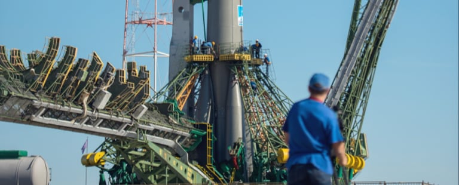
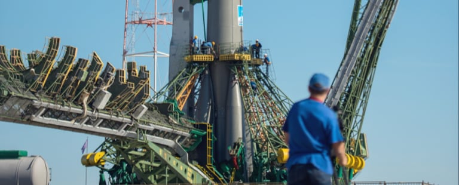

02MEET YOUR CREW
COMMANDER
DOUGLAS HURLEY
Douglas Gerald Hurley is an American engineer, former
Marine Corps pilot and former NASA astronaut. He
launched into space for the third time as commander of
Crew Dragon Demo-2.
02MEET YOUR CREW
MISSION SPECIALIST
MARK SHUTTLEWORTH
Mark Richard Shuttleworth is the founder and CEO of
Canonical, the company behind the Linux-based Ubuntu
operating system. Shuttleworth became the first South
African to travel to space as a space tourist.
02MEET YOUR CREW
PILOT
VICTOR GLOVER
Pilot on the first operational flight of the SpaceX Crew
Dragon to the International Space Station. Glover is a
commander in the U.S. Navy where he pilots an F/A-18.He
was a crew member of Expedition 64, and served as a
station systems flight engineer.
02MEET YOUR CREW
FLIGHT ENGINEER
ANOUSHEH ANSARI
Anousheh Ansari is an Iranian American engineer and
co-founder of Prodea Systems. Ansari was the fourth
self-funded space tourist, the first self-funded woman to
fly to the ISS, and the first Iranian in space.


 
